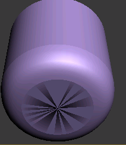
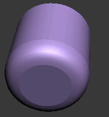

二维图形
3DMAX 提供了多种 二维图形 二维 图形不能渲染 必须 转为3D 图形 才能渲染 位于 命令面板->创建->图形 线 矩形 圆 椭圆 弧 圆环 多边形 星形 文本 螺旋线 截面
截面
截面 用于创建 一个 3D模型 的 截面图形 先 创建一个3D 模型 再 创建一个截面 使截面 截取3D模型 最后 修改 截面 选择创建图形 即可 创建3D模型的 截面图形
线
对任意一个 图形 都可以 右击 转换为样条线 样条线 可分为 顶点 线段 样条线(整个图形) 在修改中 选择对应分类 即可 以此为单位修改 图形
创建线
创建线时 点击 backspace 可以删除 当前点 按住 shift 创建 直线 鼠标 右击 完成 线条创建 鼠标 左击 创建一个角点 鼠标 左击不放 可创建曲线
修改线
线主要 以点为单位 进行修改 点分为 如下 4中(右击 顶级菜单中) 角点 平滑 //使点所在线段平滑 Bezier //Bezier点 不过两控制点 在同一直线 Bezier角点 //同上 不过 控制点可以 不在同一直线上 命令面板->修改->插值->步數 越大樣條線越平滑 命令面板->修改->優化 可以增加角點
輪廓
可以對樣條線 命令面板->修改->輪廓 之後移動鼠標為樣條線 創建一個輪廓
注意
在調整 點/控制點 位置時 循環 按下 F8 可以使點只能沿著某個方向移動
擠出
擠出 用於將一個平面圖形 增加其厚度 以變為 3D模型 菜單->修改器->網格編輯器->擠出 修改->參數->數量 (可以決定厚度)
漏空
對於多個樣條線 可以對其中一個選擇 修改->幾何體->附加 (從而 附加到一個其他幾圖形上) 對於 被附加了的圖形 使用擠出時 重疊部分 將被漏空
車削
車削 將 圖形 沿著一個軸 旋轉 形成 3D模型 菜單->修改器->面片/樣條線編輯->車削 修改 車削(->軸) 可以移動 軸 修改->參數->度數 設置旋轉度數 車削提供了三個快速定位的軸 修改->參數->對齊 最小 //圖形 x最小 位置 中心 //...中心... 最大 //...最大... 修改->參數->焊接內核 (未焊接)(焊接)  修改->
注意
增加 分塊數可以 使車削更平滑